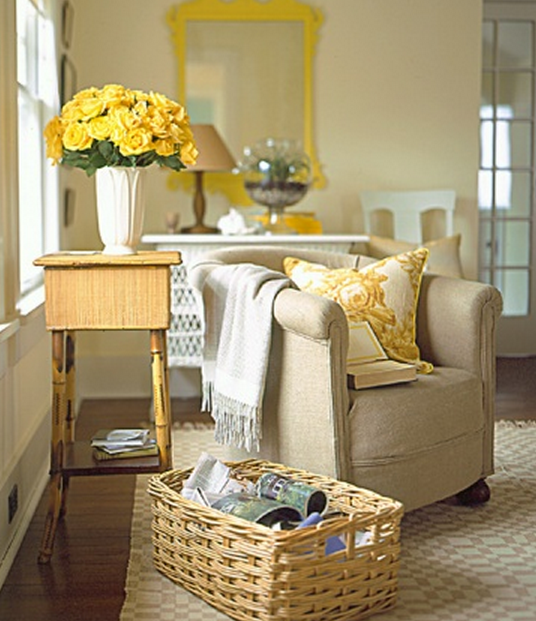

.png)
.PNG)
.PNG)
.PNG)
.PNG)
.PNG)
.JPG)
.JPG)
.PNG)
.PNG)


Hi folks! Â Wouldn’t a meal outside like the one above on a bright spring day be wonderful? I love that yellow gingham for the tablecloth, and daffodils have always been one of my favorite flowers – especially after memorizing the poem, Daffodils by William Wordsworth long ago in fourth grade. Â Did you have to recite that one when you were in school?
Speaking of school, this is THE most demanding week in the entire school year to me. Â I am bogged down in grading state writing assessments (51 of those babies) and preparing report cards and other not-very-fun things. Â So I am going to just share some rooms that have touches of happy yellow with you and be quiet while you soak up the sunshine.
Enjoy! 🙂marthastewart.com
And one last one for your front door that just seems to say, “Welcome spring!”  etsy.com
etsy.com
That bucket of tulips would be perfect for Easter. Â And, since I brought up Easter, I know you want to know who won the Easter basket in the giveaway, right? Â Well wonder no longer. Â It was lucky number….
That comment was this one from The Freshness of Green post where I asked if you had much green in your home:
Lucky Louvina please send me an email with an address so that I can get your prize in the mail to you. 🙂 And I want you all to know that I have read every one of your comments in the previous posts and plan to get back in touch with those of you with questions over the weekend.  I should be out from under all this work by then.
Hope the yellow in my post today brings you a bright sunshine-y day. Â (And to think we actually have snow flurries in the forecast for Friday morning not too far north of here!)Â I can’t begin to tell you how much I am looking forward to our spring break coming in a week or so!
Until next time…


.PNG)
Love the dreamy photos.
———————————————————————
Dayle – Thanks! So glad you liked them! Yellow is one of my favorites.
Kelly
Thanks for the cheerful pictues. With spring coming in gray and cool, we needed a ray of sunshine. Hope those essays are on the done pile. Spring break is just aound the corner!
———————————————————————-
Joann – Oh yes, gray and cool is right..downright cold with our heating system knocked out here. Yellow does brighten the day. Essays finally all made it to the done pile yesterday afternoon! Hallelujah! Spring break can’t get here fast enough. One more week!
Kelly
From a lover of all things yellow, enjoyed the pictures, yellow in a room’s decor can really lift the spirit! Hope the weekend brings some time to relax, Kelly, I remember what it’s like in the classroom at this time of year. Although, we had a freak snow storm Thursday night (parts of our area got a dusting while a half hour’s drive saw up to nine inches), looking forward to seeing the daffodils and other signs of spring making an appearance soon. My husband’s golf course was scheduled to have their season opening tournament today, that won’t be happening! Share, soon, some photos of how spring has sprung in your neck of the woods, that might hold us northern folk for awhile.
————————————————————————
Paula – Another lover of yellow! Yay! Everyone seems to be getting snow. We are getting rain and gray days. The few blooms that have come out at the bottom of our Snow azaleas are going to be knocked off by storms before the plants can get into full bloom. Everything hasn’t bloomed out yet. When the dogwoods are fully in bloom I will post some photos for you. (They have barely started.) Easter is just too early this year!
Kelly
I have always loved yellow and your rooms are beautiful. As a recently retired English teacher, I have empathy for your grading nightmare! Research papers and journals were my nightmare—although I felt that writing was absolutely essential for my students. I miss my students but not the workload which was often overwhelming. Now I have time to enjoy your blog.
———————————————————————-
Phyllis – Oh yes, all that grading was a nightmare. Soooo glad to be finished with it! I think the yellow pictures weren’t just for you all, but to give ME some cheering up while I made my way through the piles of paper. 🙂 I am glad you loved the yellow rooms too.
Kelly
The yellow certainly does look very fresh and spring-like in all the pictures! I have to make a new door wreath now that it’s spring… which means I’ll have to take down my favorite winter one with the little pine boughs and pinecones and some pretty gilt accents on the different shades of rose and burgundy flowers. Maybe I can make a new one this weekend with some sweet mini daffodils peeking out of the greenery but not sure what other colors to use. Looks like I’ll have to consult Pinterest for some color schemes to work with the daffodils since I can’t change the deep burgundy condo door!
———————————————————————–
Chris – Yellow should certainly add a touch of cheer to your burgundy door color! I would stick with yellow and white on your wreath. That would look like spring to me, and I don’t think you need any other color with it. Like you said, yellow is so fresh and spring like. Good luck with your project!
Kelly
Kelly,
Thanks for sharing the pretty yellow rooms. They are sunny and Spring like. It is calling for snow here today and this weekend and just want it to be warm and sunny. Good luck with your work load at school this week! I am also looking forward to our Easter break next week!
———————————————————————-
Dawn – I wish our break was this week, but we have another to go. Perhaps it will be warm enough to seem like spring by then. I had originally planned to go to the beach, but I think we will wait. Hope you enjoy your break. What do you do for a “spring break†when you have snow on the ground? Go skiing?? Glad the yellow rooms were a spot of sunshine in your cold winter day.
Kelly
Kelly,
Good luck with all of your school work, thanks for providing us with such a beautiful way to wile away the time…I love the sunny feeling I get from each of these rooms.
Karen
———————————————————————-
Karen – I finally finished all of the mountain of report cards and writing tests yesterday afternoon. Glad to have that done…now on to this week’s work. I am glad you liked the pictures. Yellow is just such a happy color! I bet you are having bright sunny days where you are. We seem to be cursed by gray skies here lately. Yellow helps!
Kelly
My last house had a yellow and green kitchen. Oh, how I loved that kitchen! It was a 1953 ranch. Sigh.
———————————————————————-
Julianna – You sound very nostalgic about your old kitchen. I can sympathize. My sister and I had a green and yellow bedroom growing up…with chenille daisy bedspreads. I still remember that room. At one point, our first home had a kitchen with yellow tattersall plaid wallpaper and green accents. It too was a very cheerful room. Amazing how rooms bring back memories, isn’t it? I guess it is not really the room, but all the things that happened in those rooms.
Kelly
I was viewing all the bright sunshiny yellow photos on this another cool spring day in Central FL when I got to the bottom of the page–wow– was I pleasantly surprised to read I was the winner (113-no less!) of the precious Easter basket give away!! Ya! Thank you soo much, Kelly, for bringing some much needed sunshine into my morning on this first full day of spring!! Love the yellow tulip door basket! Now I’m off to google the daffodil poem that I haven’t read in years!!:)
—————————————————————————-
So glad I could surprise you with your win! I loved that tulip basket on the door too, and I need to do that for our door here. Hope you find that poem. Every time I read it I think of my 4th grade class as a child. Congratulations again! Will get the basket out to you soon.
Kelly
Kelly-What a bright fun Spring post. I am really craving some bright colors now. We had more snow and so we are snowbound but my heart is bursting with Spring thoughts-xo Diana
————————————————————————-
I don’t believe winter is ever going to end this year! You definitely need some sunshine and yellow now if you STILL have snow. I was in Lowe’s last night and could not believe all the spring and summer plants they have out. I know we are not far enough away from winter to put those babies in the ground yet, so I resisted (VERY hard to do!) Hope spring weather is headed your way soon.
Kelly
Hello Kelly, I always enjoy your blog so much and todays “Sunshine” is just perfect on a cloudly Florida day. I also know a little something about grading papers and report cards. I retired three years ago after teaching 2nd and 3rd grades for 35 years. I enjoyed all 35 years and made so many lasting friends with parents and students. Good luck to you in your teaching and God bless.
————————————————————————
You mean Florida has cloudy days?! ha ha. I know the land of sunshine DOES indeed get rain. 35 years teaching is something for you to be proud of! I will be in my 32nd year next year. Grading papers (especially writing – where there is no “answer key”) is definitely not fun. I finished up the 51 papers yesterday afternoon. Glad to have those done! Thank you for the well wishes for my teaching, AND thank you for leaving your comment here.
Kelly
Now we’re talking! I just love yellow. It makes a room look like it’s smiling. I especially liked the pretty bedroom. And even that bathroom with the yellow walls and yellow tulips looked so neat. Thanks for finding all these inspirational pictures when I know how busy you are. You must stay up all night. :0)
———————————————————————–
I agree that some yellow makes a room look like it is smiling. Guess that is why it is such a happy color! Glad you liked the pictures, and yes I do stay up “all night.†2 a.m. was unfortunately the norm this week. Hopefully, next week will be better.
Kelly
Oh how I needed some sunshine in my day. Thank you!
Congrats to the winner too.
———————————————————————-
Lori – I know what you mean about needing some sunshine, too. Happy that I could give you a few rays of it! Thank you for dropping by and reading the blog post.
Kelly
Hi Kelly, I’m not even a huge fan of yellow and these make me want to add yellow! Thanks for the great inspiration photos and your lovely blog.
—————————————————————–
Anne – So glad to spur you on to be a fan of yellow! I am glad you liked the sunny pictures. (It is dismal gray here today.) Thank you for reading the post and leaving your sweet words!
Kelly